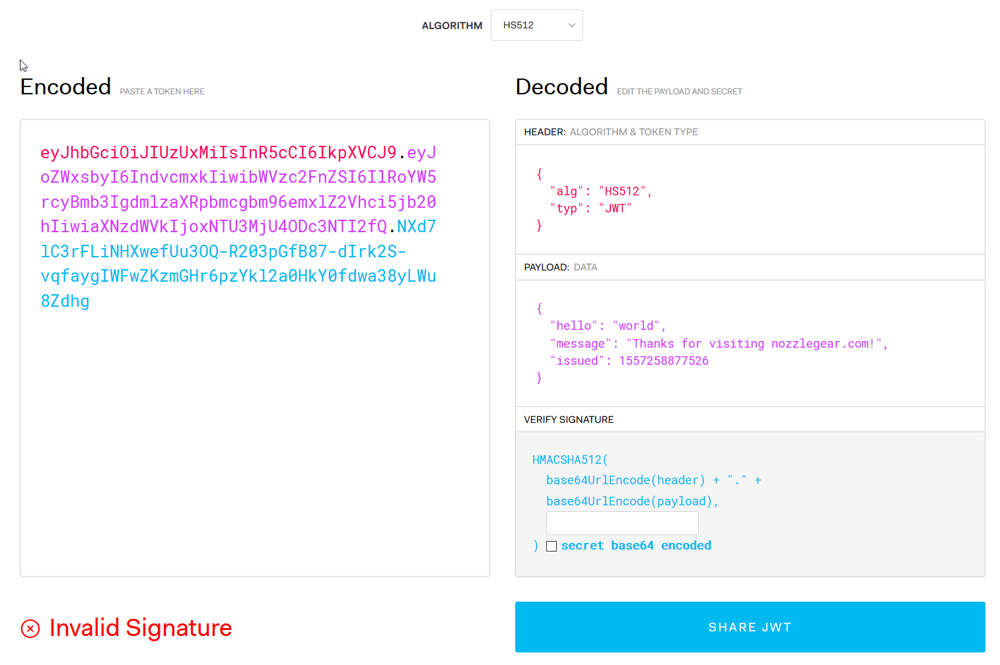
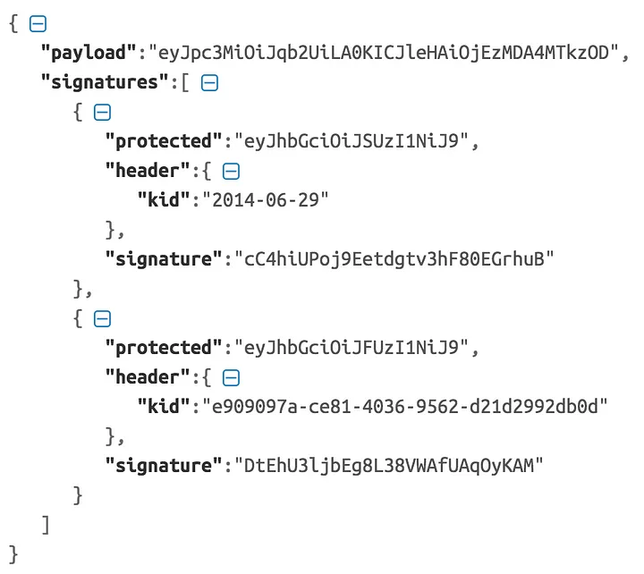

Дефиницията на JWT описана в RFC 7519 е следната:
JSON Web Token (JWT) е компактен формат за представяне на информация, предназначен за среди с ограничено пространство,
като например хедъри ( полета с информация, намиращи се в заглавната част на HTTP заявки и резултати)
за оторизация по HTTP и параметри на заявки за URI.
JWT кодира информация, която се предава като JSON обект,
който се използва като полезен товар на структура JSON Web Signature (JWS) или като обикновен текст
на структура JSON Web Encryption (JWE), което позволява информацията да бъде цифрово подписана или
защитена от нарушаване на целостта с Message Authentication Code (MAC) и/или криптиране.
JSON Web Token-и винаги се представят чрез компактната сериализация на JWS или компактната сериализация на JWE.
От текста можем да разберем, че JWT не е структура, а набор от информация
под формата на JWS или JWE. В най-простата си форма разликата между JWS и JWE е,
че всеки може да види товара на JWS, докато този на JWE е криптиран.
Може да се използва за:
Един от най-използваните стандарти за автентикация в уеб приложенията е стандартът JSON Web Token. Той се използва най-вече за автентикация, оторизация и обмен на информация.
 Фигура 1. Примерен JWTJSON Web Token-ите се състоят от три части, разделени с точки (.) и обикновено изглеждат така: xxxxx.yyyyy.zzzzz. Те са - заглавна част, полезен товар и подпис.
Автентикацията се извършва, когато клиентът успешно докаже самоличността си чрез крайна точка за вход. Ако това е успешно, сървърът ще създаде JSON Web Token и ще го изпрати в отговор на клиента.
Клиентът ще използва този JWT при всяка заявка за защитен ресурс.
Сървър, изграден на базата на JWT за оторизация, ще създаде JWT, когато клиентът влезе в системата. Този JWT е подписан, така че никоя друга страна не може да го промени.
Всеки път, когато клиентът има достъп до защитени ресурси, сървърът ще проверява дали подписът на JWT съвпада с неговия полезен товар и заглавие, за да определи, че JWT е валиден.
След това, ако JWT е успешно проверен, той може да предостави или откаже достъп до ресурса.
JWT е също така чудесен начин за осигуряване на сигурността на предаването на информация между страните - например два сървъра - защото можете да проверите валидността на токена (подпис, структура или стандартите, заявени в JWT).
JWT не изисква справка в базата данни, така че отмяната им преди изтичане на срока е доста трудна.
Отмяната е много важна в много случаи.
Например при отписване или забрана на потребители, или незабавна промяна на разрешения или пароли, ако токенът не е бил отменен, може да е възможно потребителят да продължи да прави заявки, дори ако този потребител вече няма необходимото разрешение за това.
JWT обикновено се подписва, за да се защити от манипулиране или промяна на данните. При това данните могат лесно да бъдат прочетени или декодирани.
Така че не можете да включите чувствителна информация, като например записа на потребителя или някакъв идентификатор, защото данните не са криптирани.
Размерът на JWT е по-голям от размера на сесийния токен. И той може бързо да се увеличи линейно, когато добавяте повече данни към JWT. И тъй като трябва да изпращате JWT при всяка заявка, увеличавате размера на товара. Това може да стане доста сложно, ако има нискоскоростна интернет връзка.
По-долу е показан примерен JWT, който се връща от доставчика на Google OpenID Connect.
Тук Google, който е доставчик на идентичност, потвърждава идентичността на крайния потребител
и предава JWT на доставчик на услуги (уеб или мобилно приложение).
Пример 1.
eyJhbGciOiJSUzI1NiIsImtpZCI6Ijc4YjRjZjIzNjU2ZGMzOTUzNjRmMWI2YzAyOTA3NjkxZjJjZGZmZTEifQ.
eyJpc3MiOiJhY2NvdW50cy5nb29nbGUuY29tIiwic3ViIjoiMTEwNTAyMjUxMTU4OTIwMTQ3NzMyIiwiYXpwIjoiODI1MjQ5ODM1NjU5LXRlOHFnbDcwMWtnb25ub21ucDRzcXY3ZXJodTEyMTFzLmFwcHMuZ29vZ2xldXNlcmNvbnRlbnQuY29tIiwiZW1haWwiOiJwcmFiYXRoQHdzbzIuY29tIiwiYXRfaGFzaCI6InpmODZ2TnVsc0xCOGdGYXFSd2R6WWciLCJlbWFpbF92ZXJpZmllZCI6dHJ1ZSwiYXVkIjoiODI1MjQ5ODM1NjU5LXRlOHFnbDcwMWtnb25ub21ucDRzcXY3ZXJodTEyMTFzLmFwcHMuZ29vZ2xldXNlcmNvbnRlbnQuY29tIiwiaGQiOiJ3c28yLmNvbSIsImlhdCI6MTQwMTkwODI3MSwiZXhwIjoxNDAxOTEyMTcxfQ.
TVKv-pdyvk2gW8sGsCbsnkqsrS0T-H00xnY6ETkIfgIxfotvFn5IwKm3xyBMpy0FFe0Rb5Ht8AEJV6PdWyxz8rMgX2HROWqSo_RfEfUpBb4iOsq4W28KftW5H0IA44VmNZ6zU4YTqPSt4TPhyFC9fP2D_Hg7JQozpQRUfbWTJI
Това изглежда нелепо, докато не го разделите на точки (.) и не декодирате всяка част по base64url.
В него има две точки, които разделят целия низ на три части.
След като декодирате първата част, тя изглежда както е показано по-долу:
Пример 2.
{“alg”:”RS256",”kid”:”78b4cf23656dc395364f1b6c02907691f2cdffe1"}
Тази първа част (след като бъде разделена от точките) на JWT е известна като заглавна част JOSE.
JOSE е съкращение от Javascript Object Signing and Encryption (подписване и криптиране на обекти в Javascript) -
това е името на работната група на IETF, която работи по стандартизиране на представянето на данни,
защитени от нарушаване на целостта, чрез структури от данни JSON.
Горният JOSE хедър показва, че това е подписано съобщение.
Google потвърждава самоличността на крайния потребител чрез подписване на JWT,
който носи данни, свързани със самоличността на потребителя.
Подписаният JWT е известен като JWS (JSON Web Signature).
Всъщност JWT не съществува сам по себе си - той трябва да бъде или JWS, или JWE (JSON Web Encryption).
Това е нещо като абстрактен клас - JWS и JWE са конкретните имплементации.
Спецификацията на JSON Web Signature предоставя стандартен механизъм с общо предназначение за генериране и представяне
на цифров подпис върху структура от данни JSON.
От спецификацията:
"JWS представя цифрово подписано или MACed (Message Authentication Code) съдържание,
като използва JSON структури от данни и base64URL кодиране."
JSON (Javascript Object Notation) е въведен като част от езика за програмиране JavaScript за представяне
на обекти и става популярен, като почва да се използва в API. В този момент технологията започва да израства.
Част от процеса на съзряване е създаването на индустриални спецификации за неща като цифрови подписи.
Ако се върнем към JOSE хедъра, върнат от Google, и двата елемента alg и kid в него не са дефинирани в спецификацията на JWT, а в спецификацията на JSON Web Signature (JWS). Спецификацията на JWT дефинира само два елемента (typ и cty) в JOSE хедъра, а спецификациите на JWS и JWE го разширяват, за да добавят още подходящи елементи. В JWT член-данните на JSON обекта, представен от JOSE хедъра, описват криптографските операции, приложени към JWT, и по желание - допълнителни свойства на JWT. В зависимост от това дали JWT е JWS или JWE, се прилагат съответните правила за стойностите на JOSE хедъра. Както при JWS, така и при JWE, JOSE хедъра е задължителен - или с други думи, не съществува JWT без JOSE хедъри.
JWT може да бъде JWS или JWE обект. Незащитеният JWT е JWS обект, при който в JOSE хедъра стойността на елемента alg е зададена на нищо. С други думи, незащитеният JWT е JWS без подпис. Когато се разпространява информация за самоличността на потребителя и правата му чрез незащитен JWT, се очаква основният транспорт да осигури гаранция за целостта и поверителността на токена (използване на TLS).
Да се върнем отново върху примера на JWT, върнат от Google.
Сега вече знаем, че това е JWS. По-долу е показан декодираната по base64url информация, върната от Google.
Втората част на JWT (когато е разделена с точка (.)) е известна като множество от твърдения на JWT.
Празните полета могат да бъдат изрично запазени при изграждането на множество от твърдения на JWT -
не е необходима канонизация преди кодирането или декодирането на base64url.
Канонизацията е процес на преобразуване на различни форми на дадено съобщение в една стандартна форма.
Това се използва най-вече преди подписване на XML съобщения. [5]
Множеството от твърдения на JWT представлява JSON обект,
чиито членове са твърдения, заявени от издателя на JWT.
Всеки елемент на множеството от твърдения в рамките на JWT трябва да е уникален.
Ако има дублиращи се имена на елементи, JWT парсерът може да върне грешка при парсирането или
просто да върне обратно множеството от твърдения с последния дублиран елемент.
Спецификацията на JWT не определя изрично кои твърдения са задължителни и кои са незадължителни.
Определянето на задължителните и незадължителните твърдения зависи от всяко приложение на JWT.
Например спецификацията на OpenID Connect дефинира задължителните и незадължителните претенции.
Според основната спецификация на OpenID Connect iss, sub, aud, exp и iat се разглеждат като задължителни елементи,
докато auth_time, nonce, acr, amr и azp са незадължителни елементи.
В допълнение към задължителните и незадължителните твърдения,
които са дефинирани в спецификацията, доставчикът на идентификация може да включи
допълнителни елементи в множеството от твърдения на JWT.
Отново се фокусираме върху примера на JWT, върнат от Google. Третата част на JWT (когато е разделена с точка (.)) е подписът, който също е кодиран по base64url. Криптографските елементи, свързани с подписа, са дефинирани в JOSE хедъра. В този конкретен пример Google използва RSASSA-PKCS1-V1_5 с алгоритъм за хеширане SHA-256, който се изразява чрез стойността на елемента alg в JOSE хедъра: RS256.
Подписано или криптирано съобщение може да се сериализира по два начина, като се следва спецификацията на JWS или JWE:
компактна сериализация на JWS/JWE и JSON сериализация на JWS/JWE.
В отговора на Google OpenID Connect, разгледан по-рано, се използва компактната сериализация на JWS.
Всъщност спецификацията на OpenID Connect задължава да се използва компактна сериализация на JWS и
JWE компактна сериализация, когато е необходимо.
Сега можем да доуточним дефиницията на JWT.
Досега знаехме, че и JWS, и JWE токените са екземпляри на JWT.
Но това не е 100% точно. Наричаме JWS или JWE - JWT, само ако следва компактната сериализация.
Всеки JWT трябва да следва компактна сериализация. С други думи, JWS или JWE токен,
който следва JSON сериализация, не може да бъде наречен JWT.
Компактната сериализация на JWS представя подписан JWT като компактен низ, защитен от URL. Този компактен низ се състои от три основни елемента, разделени с точки (.): JOSE хедъра, товара на JWS и подпис на JWS. Ако използвате компактна сериализация върху товара в JSON (или какъвто и да е полезен товар - дори XML), тогава можете да имате само една сигнатура (подпис), която се изчислява върху целия JOSE хедър и полезен товар на JWS.
По-долу е описан процесът на подписване на JWS при компактната сериализация.
За разлика от компактната сериализация на JWS, сериализацията на JSON на JWS може да създаде множество подписи
върху един и същ полезен товар на JWS заедно с множество JOSE хедъри.
Крайната сериализирана форма при JWS JSON сериализация обвива подписания полезен товар в JSON обект, с всички свързани метаданни.
Този JSON обект включва 2 елемента от най-високо ниво: полезен товар и подписи (които представляват JSON масив),
и три под-елемента под всеки запис на масива от подписи: protected, header и signature.
По-долу е даден пример за JWS токен, който се сериализира по JWS JSON сериализация.

Фигура 2.
Това не е нито безопасно за URL, нито оптимизирано за компактност.
Той пренася два подписа върху един и същ полезен товар, като всеки подпис и метаданните около него
се съхраняват като елемент в JSON масива, представен от елемента от най-високо ниво signatures.
Всяка сигнатура използва различен ключ за подписване, представен от съответния елемент на ниво kid.
Елементът от най-високо ниво на полезния товар на JSON обекта включва стойността на пълния полезен товар на JWS,
кодирана по base64url. Не е задължително полезният товар на JWS да бъде полезен товар в JSON,
той може да бъде от всякакъв тип съдържание. Полезният товар е задължителен елемент в сериализирания JWS токен.
Защитеният хедър на JWS е JSON обект, който включва елементите на хедъра, които трябва да бъдат
защитени от целостта чрез алгоритъма за подписване или MAC. В един JWS може да има няколко защитени заглавия на JWS,
сериализирани в рамките на JSON сериализация, като всяко от тях носи
елементи на заглавието, които трябва да бъдат подписани по различен начин.
Сериализацията по JSON е полезна за селективно подписване на елементите на JOSE хедъра,
докато за разлика от това компактната сериализация на JWS подписва целия JOSE хедър.
Всеки защитен елемент в сериализираната JSON форма представлява стойността на защитен хедър на JWS, кодирана по base64url.
Защитеният елемент се дефинира под всеки запис на JSON масива signatures и включва кодирания по base64url
JSON обект на елементите на заглавието, които трябва да бъдат подписани.
Ако декодирате по base64url стойността на първия защитен елемент в горния фрагмент от код,
ще видите {"alg": "RS256"}. Защитеният елемент трябва да присъства, ако има защитени заглавия на JWS.
Може да има по един защитен елемент за всеки запис на JSON масива signatures.
Незащитеният хедър на JWS е JSON обект, който включва елементите на хедъра, които не са
защитени от алгоритъма за подписване или MAC. Всеки елемент на заглавието в сериализирания
JSON представлява кодирана по base64url стойност на незащитено заглавие на JWS.
Елементът на заглавието се дефинира под всеки запис в JSON масива signatures и включва
незащитени заглавни елементи, съответстващи на този подпис, които не са подписани.
Комбинирането на защитените и незащитените заглавия в крайна сметка води до получаването на JOSE хедъра,
съответстващ на този подпис (метаданните, свързани с подписа, могат да бъдат защитени или незащитени).
В горния откъс от код пълният JOSE хедър, съответстващ на първия запис в JSON масива signatures
ще бъде {"alg": "RS256", "kid": "2010-12-29"}, който обединява както защитените, така и незащитените заглавия.
Самият елемент на заглавието се представя като JSON обект и трябва да присъства
ако има незащитени заглавни елементи.
Може да има по един елемент на заглавието за всеки запис на JSON масива signatures.
Елементът signatures на JSON обекта включва масив от JSON обекти,
където всеки елемент включва подпис или MAC (върху полезния товар на JWS и защитеното заглавие на JWS)
и свързаните с него метаданни. Това е задължителен елемент.
Елементът на подписа, който се намира във всеки запис на масива от подписи, носи
base64url-кодирана стойност на подписа, изчислен върху
защитените елементи на заглавието (представени от защитения елемент) и полезния товар на JWS.
И подписите, и сигнатурата са задължителни елементи.
По-долу е описан процесът на подписване на JWS при JSON сериализация.
С компактната сериализация на JWE токенът на JWE се изгражда от пет ключови компонента, всеки от които е разделен с точка (.): JOSE хедър, ключ за криптиране на JWE, вектор за инициализация на JWE, допълнителни данни за удостоверяване на автентичността на JWE (AAD), шифровъчен текст на JWE и таг за удостоверяване на автентичността на JWE.
JOSE хедърът е първият елемент на JWE токена, създаден при компактна сериализация. Структурата на JOSE хедъра е същата, както при JWS, с няколко изключения. В спецификацията на JWE се въвеждат два нови елемента (enc и zip), които са включени в JOSE хедъра на JWE токена, в допълнение към дефинираните в спецификацията на JSON Web Signature (JWS).
За да разберем ключа за криптиране на JWE,
първо трябва да разберем как се криптира полезен товар в JSON.
Елементът enc от JOSE хедъра определя алгоритъма за криптиране на съдържанието и
той трябва да бъде симетричен алгоритъм за автентично криптиране с асоциирани данни (AEAD).
Елементът alg на JOSE хедъра определя алгоритъма за криптиране на ключа за криптиране на съдържанието (CEK).
Този алгоритъм може да се определи и като алгоритъм за обвиване на ключа, тъй като той обвива CEK.
Удостовереното криптиране със свързани данни (AEAD) е режим на работа на блоков шифър,
който осигурява едновременно конфиденциалност, цялостност и автентичност на данните;
декриптирането се комбинира в една стъпка с проверка на целостта.
Нека разгледаме следния JOSE хедър. За криптиране на съдържанието,
се използва алгоритъм A256GCM, а за обвиване на ключове - RSA-OAEP:
{“alg”:”RSA-OAEP”,”enc”:”A256GCM”}
A256GCM е дефиниран в спецификацията на JWA.
Тя използва алгоритъма Advanced Encryption Standard (AES) в режим Galois/Counter Mode (GCM) с ключ с дължина 256 бита,
и това е алгоритъм със симетричен ключ, използван за AEAD.
Симетричните ключове се използват предимно за криптиране на съдържание и са много
по-бързи от криптирането с асиметричен ключ.
В същото време криптирането с асиметричен ключ не може да се използва за криптиране на големи съобщения.
RSA-OAEP е също дефинирана в спецификацията на JWA.
По време на процеса на криптиране издателят на токена генерира произволен ключ,
който е с размер 256 бита, и криптира съобщението, като използва този ключ, следвайки алгоритъма AES GCM.
След това ключът, използван за криптиране на съобщението, се криптира с помощта на RSA-OAEP,
която е асиметрична схема за криптиране.
Схемата за криптиране RSA-OAEP използва алгоритъма RSA с метода Optimal Asymmetric Encryption Padding (OAEP).
Накрая криптираният симетричен ключ се поставя в секцията JWE Encrypted Header (Криптиран хедър на JWE) на JWE.
Това има същото значение, както е обяснено в раздела за компактна сериализация на JWE, преди това.
Елементът iv (вектор на инициализация) в JWE токена представлява стойността на
вектора за инициализация, използван за криптиране.
Някои алгоритми за криптиране, които се използват за криптиране на съдържание, изискват вектор за инициализация,
по време на процеса на криптиране.
Векторът на инициализация е случайно генерирано число, което се използва заедно с тайния ключ за криптиране на данни.
Това ще добави случайност към криптираните данни, което ще предотврати повтарянето
дори едни и същи данни да бъдат криптирани, като се използва един и същ секретен ключ отново и отново.
За да се декриптира съобщението в края на получателя на символа, той трябва да знае вектора на инициализация,
Затова той е включен в JWE токена под елемента JWE Initialization Vector.
Ако алгоритъмът за криптиране на съдържанието не изисква вектор за инициализация,
тогава стойността на този елемент трябва да остане празна.
Това има същото значение, както е обяснено в раздела за компактна сериализация на JWE.
Елементът ciphertext в JWE токена носи кодираната по base64url стойност на шифрошъчния текст на JWE
Четвъртият елемент на символа JWE е кодираната по base64url стойност на шифровия текст JWE.
Шифротекстът на JWE се изчислява чрез криптиране на полезния товар JSON с обикновен текст,
като се използва ключът за криптиране на съдържанието (CEK),
вектора за инициализация на JWE и стойността на допълнителните данни за удостоверяване (AAD),
с алгоритъма за криптиране, определен от елемента enc на заглавието.
Алгоритъмът, определен от елемента enc на заглавието, трябва да бъде
симетричен алгоритъм за автентично криптиране с допълнителни данни (AEAD).
Алгоритъмът AEAD, който се използва за криптиране на полезния товар с обикновен текст,
позволява също така да се посочат допълнителни удостоверени данни (AAD).
Това има същото значение, както е обяснено в раздела за компактна сериализация на JWE, преди това.
Елементът таг в JWE токена носи кодираната по base64url стойност на удостоверения таг на JWE,
която е резултат от процеса на криптиране с помощта на алгоритъм AEAD.
Стойността на JWE Authenticated Tag, кодирана по base64url, е последният елемент на JWE токена.
Както беше обсъдено преди, стойността на удостоверителния таг се създава по време на
AEAD, заедно с шифровия текст.
Тагът за удостоверяване гарантира целостта на шифровия текст и на допълнителните удостоверени данни (AAD).
По-долу е описан процесът на криптиране на JWE при компактната сериализация.
За разлика от компактната сериализация на JWE, JSON сериализацията на JWE може да създава криптирани данни. насочени към множество получатели чрез един и същ полезен товар JSON. Крайната сериализирана форма при JSON сериализация на JWE представлява криптиран полезен товар в JSON обект. Този JSON обект включва шест елемента от най-високо ниво: protected (защитен), unprotected (незащитен), recipients (получатели), iv, ciphertext (шифровъчен текст) и tag (етикет). По-долу е представен пример за JWE токен, който е сериализиран по JWE JSON сериализация.
Защитеният хедър на JWE е JSON обект, който включва елементите на хедъра, които трябва да бъдат защитени от автентичната операция за криптиране (AEAD). Елементите в защитеното заглавие на JWE са приложими за всички получатели на JWE токена. Защитеният елемент в сериализираната JSON форма представлява стойността на защитеното заглавие на JWE, кодирана по base64url. В един JWE токен може да има само един защитен елемент на ниво корен и всички елементи на заглавието, които обсъдихме преди това в рамките на заглавието JOSE, могат да се използват и в рамките на защитеното заглавие JWE.
Споделеният незащитен хедър на JWE е JSON обект, който включва елементите на хедъра, които не са защитени от нарушаване на целостта. Елементите в споделеното незащитено заглавие на JWE са приложими за всички получатели на JWE токена. Незащитеният елемент в сериализираната JSON форма представлява споделеният незащитен хедър на JWE. В един JWE токен може да има само един незащитен елемент, на ниво корен и всеки елемент на заглавието, който обсъдихме преди това в рамките на JOSE хедъра, може да се използва и в рамките на JWE споделено незащитено заглавие.
Незащитеният хедър на JWE за всеки получател е JSON обект, който включва елементите на хедъра които не са защитени от нарушаване на целостта. Елементите в незащитеното заглавие на JWE за всеки получател са приложими само за конкретен получател на JWE токена. В JWE токена, тези елементи на заглавието са групирани под елемента "получатели". Елементът recipients представлява масив от получатели на JWE токена. Всеки член се състои от заглавен елемент и елемент encrypted_key.
По-долу е описан процесът на криптиране на JWE при JSON сериализация.
JSON Web Algorithms (JWA) е спецификация, която предоставя списък с криптографски алгоритми.
JWA предоставя определения за няколко криптографски алгоритъма. Тези алгоритми дават възможност за различни цели.
Спецификацията JWA определя уникално име за всеки алгоритъм.
Тези имена са кратки низове, кодиращи конкретното семейство алгоритми и алгоритъма за хеширане.
За повечето алгоритми за подписване съществуват варианти за SHA-256, SHA-384 и SHA-512.
Най-често срещаните имена на алгоритми, дефинирани в спецификацията на JWA, включват следното:
В спецификацията на JWA са дефинирани много криптографски алгоритми, които могат да се използват за различни цели, включително:
Кодовете за автентификация на съобщения, базирани на хеш (HMAC), са популярен клас алгоритми за подписани JWT.
HMAC, като HS256, осигуряват начин за подписване на съобщения с помощта на споделен ключ.
Те принадлежат към семейството на симетричните криптографски алгоритми.
Симетричните алгоритми изискват всички участващи страни да знаят един и същ ключ.
Те са полезни, когато всички клиенти могат да гарантират секретността на споделения ключ.
Техният разрешителен характер позволява на всички притежатели на ключове да създават и проверяват JWT.
HMAC се използват най-добре в конфигурации с един централен издател/верификатор.
JWA специфицира две фамилии алгоритми за асиметрично криптиране и цифров подпис - RSA и ECDSA. Двойките публичен-частен ключ са в основата на асиметричните алгоритми. Те позволяват отделянето на проверката или декриптирането на даден символ от възможността за подправяне на нов. Това е от съществено значение за разпределените сценарии за валидиране на токени. Тя позволява децентрализирано оторизиране вземане на решения в OAuth 2.0 и OpenId Connect (OIDC).
Широко разпространен случай на употреба е децентрализираната проверка на подписа на токена за асиметрично подписан JWT.
Това е ключов фактор за OpenID Connect.
Начело на това практическо приложение е централен сървър за оторизация.
Този издател на токени притежава частен ключ за подписване и излага материала си с публичен ключ.
Клиентите, които се нуждаят от проверка на токени, извличат публичните ключове от добре познатата крайна точка JWK.
Въз основа на криптографската метаинформация, носена в заглавието на JWT,
клиентите идентифицират съответстващия ключ и JWA.
По този начин доверяващите се страни могат да проверяват целостта на токена,
без да е необходима централизирана интроспекция.